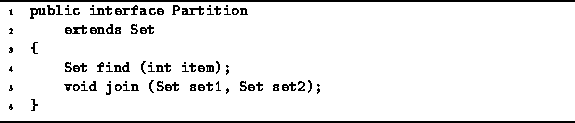

Data Structures and Algorithms
with Object-Oriented Design Patterns in Java
Data Structures and Algorithms
with Object-Oriented Design Patterns in Java
Program  defines the Partition interface.
The Partition interface extends the Set interface
defined in Program .
Since a partition is a set of sets,
it makes sense to derive Partition from Set.
The two methods, find and join,
correspond to the partition operations described above.
defines the Partition interface.
The Partition interface extends the Set interface
defined in Program .
Since a partition is a set of sets,
it makes sense to derive Partition from Set.
The two methods, find and join,
correspond to the partition operations described above.

Program: Partition interface.
The elements of a partition are also sets. Consequently, the objects contained in a Partition are also implement the Set interface. The find method of the Partition class expects as its argument an int and returns the Set which contains the specified item.
The join method takes two arguments, both of them references to Sets. The two arguments are expected to be distinct elements of the partition. The effect of the join operation is to remove the specified sets from the partition and replace them with a Set which represents the union of the two.
 Copyright © 1998 by Bruno R. Preiss, P.Eng. All rights reserved.
Copyright © 1998 by Bruno R. Preiss, P.Eng. All rights reserved.